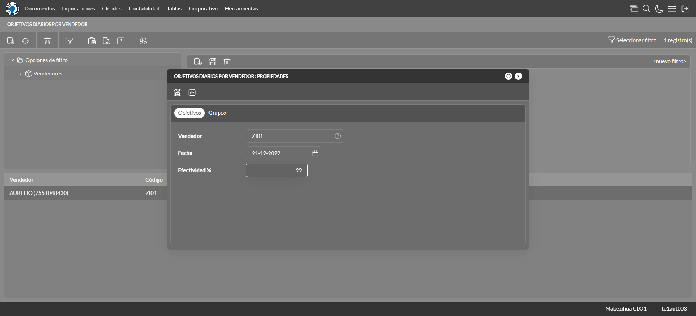
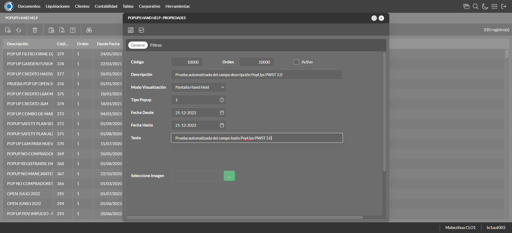
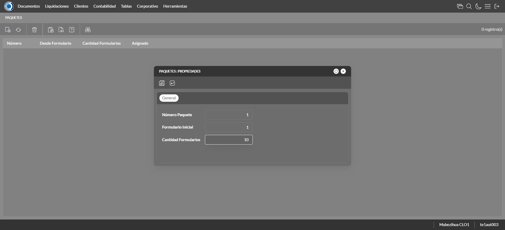

Desarrollado por : Area de Testing PWST
Fecha y hora de inicio : 2022-12-21 09:57:19
Duracion : 0:03:33.787889
Resultado : Total 22，Correctos 17 ，Errores 5 ，Taza de resultado 77.27%
Resumen 77.27% Errores 5 Fallidos 0 Correctos 17 Test realizados 22
| Caso de Prueba | Total | Correctos | Fallido | Error | Detalles | Captura del error |
| ScriptAmarillo.Test: Script Amarillo | 22 | 17 | 0 | 5 | Detalles | |
test |
ft1_1: 2022-12-21 09:57:21,320 - root - INFO - Se abre el chrome
2022-12-21 09:57:22,537 - root - INFO - Entra a la URL
2022-12-21 09:57:22,668 - root - INFO - Maximiza la pantalla
Traceback (most recent call last):
File "C:\Users\jsand\AppData\Local\Programs\Python\Python310\lib\site-packages\selenium-4.4.0-py3.10.egg\selenium\webdriver\remote\switch_to.py", line 87, in frame
frame_reference = self._driver.find_element(By.ID, frame_reference)
File "C:\Users\jsand\AppData\Local\Programs\Python\Python310\lib\site-packages\selenium-4.4.0-py3.10.egg\selenium\webdriver\remote\webdriver.py", line 856, in find_element
return self.execute(Command.FIND_ELEMENT, {
File "C:\Users\jsand\AppData\Local\Programs\Python\Python310\lib\site-packages\selenium-4.4.0-py3.10.egg\selenium\webdriver\remote\webdriver.py", line 434, in execute
self.error_handler.check_response(response)
File "C:\Users\jsand\AppData\Local\Programs\Python\Python310\lib\site-packages\selenium-4.4.0-py3.10.egg\selenium\webdriver\remote\errorhandler.py", line 243, in check_response
raise exception_class(message, screen, stacktrace)
selenium.common.exceptions.NoSuchElementException: Message: no such element: Unable to locate element: {"method":"css selector","selector":"[id="mainFrame"]"}
(Session info: chrome=108.0.5359.125)
Stacktrace:
Backtrace:
(No symbol) [0x00BFF243]
(No symbol) [0x00B87FD1]
(No symbol) [0x00A7D04D]
(No symbol) [0x00AAC0B0]
(No symbol) [0x00AAC22B]
(No symbol) [0x00ADE612]
(No symbol) [0x00AC85D4]
(No symbol) [0x00ADC9EB]
(No symbol) [0x00AC8386]
(No symbol) [0x00AA163C]
(No symbol) [0x00AA269D]
GetHandleVerifier [0x00E99A22+2655074]
GetHandleVerifier [0x00E8CA24+2601828]
GetHandleVerifier [0x00CA8C0A+619850]
GetHandleVerifier [0x00CA7830+614768]
(No symbol) [0x00B905FC]
(No symbol) [0x00B95968]
(No symbol) [0x00B95A55]
(No symbol) [0x00BA051B]
BaseThreadInitThunk [0x76796BD9+25]
RtlGetFullPathName_UEx [0x77B58FD2+1218]
RtlGetFullPathName_UEx [0x77B58F9D+1165]
During handling of the above exception, another exception occurred:
Traceback (most recent call last):
File "C:\Users\jsand\AppData\Local\Programs\Python\Python310\lib\site-packages\selenium-4.4.0-py3.10.egg\selenium\webdriver\remote\switch_to.py", line 90, in frame
frame_reference = self._driver.find_element(By.NAME, frame_reference)
File "C:\Users\jsand\AppData\Local\Programs\Python\Python310\lib\site-packages\selenium-4.4.0-py3.10.egg\selenium\webdriver\remote\webdriver.py", line 856, in find_element
return self.execute(Command.FIND_ELEMENT, {
File "C:\Users\jsand\AppData\Local\Programs\Python\Python310\lib\site-packages\selenium-4.4.0-py3.10.egg\selenium\webdriver\remote\webdriver.py", line 434, in execute
self.error_handler.check_response(response)
File "C:\Users\jsand\AppData\Local\Programs\Python\Python310\lib\site-packages\selenium-4.4.0-py3.10.egg\selenium\webdriver\remote\errorhandler.py", line 243, in check_response
raise exception_class(message, screen, stacktrace)
selenium.common.exceptions.NoSuchElementException: Message: no such element: Unable to locate element: {"method":"css selector","selector":"[name="mainFrame"]"}
(Session info: chrome=108.0.5359.125)
Stacktrace:
Backtrace:
(No symbol) [0x00BFF243]
(No symbol) [0x00B87FD1]
(No symbol) [0x00A7D04D]
(No symbol) [0x00AAC0B0]
(No symbol) [0x00AAC22B]
(No symbol) [0x00ADE612]
(No symbol) [0x00AC85D4]
(No symbol) [0x00ADC9EB]
(No symbol) [0x00AC8386]
(No symbol) [0x00AA163C]
(No symbol) [0x00AA269D]
GetHandleVerifier [0x00E99A22+2655074]
GetHandleVerifier [0x00E8CA24+2601828]
GetHandleVerifier [0x00CA8C0A+619850]
GetHandleVerifier [0x00CA7830+614768]
(No symbol) [0x00B905FC]
(No symbol) [0x00B95968]
(No symbol) [0x00B95A55]
(No symbol) [0x00BA051B]
BaseThreadInitThunk [0x76796BD9+25]
RtlGetFullPathName_UEx [0x77B58FD2+1218]
RtlGetFullPathName_UEx [0x77B58F9D+1165]
During handling of the above exception, another exception occurred:
Traceback (most recent call last):
File "C:\xampp\htdocs\versiones\automatizaciones\AutoPWST\ScriptAmarillo\testCase\ScriptAmarillo.py", line 62, in test
self.driver.switch_to.frame("mainFrame")
File "C:\Users\jsand\AppData\Local\Programs\Python\Python310\lib\site-packages\selenium-4.4.0-py3.10.egg\selenium\webdriver\remote\switch_to.py", line 92, in frame
raise NoSuchFrameException(frame_reference)
selenium.common.exceptions.NoSuchFrameException: Message: mainFrame
|
|
||||
test_000: Ingresa a la base de datos |
pt1_2: 2022-12-21 09:57:25,894 - root - INFO - Escribe el usuario
2022-12-21 09:57:26,065 - root - INFO - Escribe la contraseña
2022-12-21 09:57:26,242 - root - INFO - Se dio clic en el boton ingresar
2022-12-21 09:57:27,047 - root - INFO - Ejecutar Enterprise
2022-12-21 09:57:31,141 - root - INFO - Cambia entre pestañas
|
|
||||
test_001: Ingresa a pantalla Objetivos Diarios |
pt1_3: 2022-12-21 09:57:42,413 - root - INFO - Abre la pantalla de Objetivos Diarios
2022-12-21 09:57:42,982 - root - INFO - La pantalla ejecutada es Lista de precios.
2022-12-21 09:57:42,982 - root - INFO - Captura: C:\xampp\htdocs\versiones\automatizaciones\AutoPWST\ScriptAmarillo\report\img screen：20221221_09_57_42.png
2022-12-21 09:57:43,343 - root - INFO - Se presiona el boton 'Refrescar', para crear un nuevo registro igual al anterior.
2022-12-21 09:57:53,851 - root - INFO - Se presiona el boton 'Nuevo', para crear un nuevo registro.
|

|
||||
test_002: Agregar Objetivos Diarios |
pt1_4: 2022-12-21 09:57:54,411 - root - INFO - Se abrio la pantalla para el ingreso de un registro nuevo.
2022-12-21 09:57:54,452 - root - INFO - El campo 'Vendedor' si se encuentra visible.
2022-12-21 09:57:54,490 - root - INFO - El campo 'Fecha' si se encuentra visible.
2022-12-21 09:57:54,530 - root - INFO - El campo 'Efectividad %' si se encuentra visible.
2022-12-21 09:57:56,018 - root - INFO - Ingresa la efectividad del nuevo registro
2022-12-21 09:57:58,024 - root - INFO - Captura: C:\xampp\htdocs\versiones\automatizaciones\AutoPWST\ScriptAmarillo\report\img screen：20221221_09_57_58.png
2022-12-21 09:57:58,250 - root - INFO - Se hace el cambio de pestaña para continuar con el registro nuevo
2022-12-21 09:57:58,840 - root - INFO - Se presiona el boton 'Nuevo', para crear un nuevo registro.
2022-12-21 09:57:59,391 - root - INFO - El campo 'Grupo Política' si se encuentra visible.
2022-12-21 09:57:59,437 - root - INFO - El campo 'Tipo Objetivo' si se encuentra visible.
2022-12-21 09:57:59,477 - root - INFO - El campo 'Tipo Unidad' si se encuentra visible.
2022-12-21 09:57:59,516 - root - INFO - El campo 'Objetivo Cantidad' si se encuentra visible.
2022-12-21 09:57:59,559 - root - INFO - El campo 'Objetivo Cobertura' si se encuentra visible.
2022-12-21 09:58:01,570 - root - INFO - Ingresa el Objetivo Cantidad del nuevo registro
2022-12-21 09:58:01,672 - root - INFO - Ingresa el Objetivo Cobertura del nuevo registro
2022-12-21 09:58:01,761 - root - INFO - Se da clic en el boton Guardar; se debe crear un nuevo registro.
2022-12-21 09:58:01,948 - root - INFO - Se da clic en el boton Guardar; se debe crear un nuevo registro.
|

|
||||
test_003: Repetir Registro Objetivos Diarios |
pt1_5: 2022-12-21 09:58:02,217 - root - INFO - Se presiona el boton 'Refrescar', para crear un nuevo registro igual al anterior.
2022-12-21 09:58:07,277 - root - INFO - Se presiona el boton 'Nuevo', para crear un nuevo registro igual al anterior.
2022-12-21 09:58:07,828 - root - INFO - Se abrio la pantalla para el ingreso de un registro nuevo.
2022-12-21 09:58:07,862 - root - INFO - El campo 'Vendedor' si se encuentra visible.
2022-12-21 09:58:07,896 - root - INFO - El campo 'Fecha' si se encuentra visible.
2022-12-21 09:58:07,931 - root - INFO - El campo 'Efectividad %' si se encuentra visible.
2022-12-21 09:58:09,386 - root - INFO - Ingresa la efectividad del nuevo registro
2022-12-21 09:58:09,461 - root - INFO - Se da clic en el boton Guardar; se debe crear un nuevo registro.
2022-12-21 09:58:11,478 - root - INFO - Captura: C:\xampp\htdocs\versiones\automatizaciones\AutoPWST\ScriptAmarillo\report\img screen：20221221_09_58_11.png
2022-12-21 09:58:11,752 - root - INFO - Se presiona el boton 'Cerrar', para cerrar el mensaje de duplicidad de llave primaria
2022-12-21 09:58:11,884 - root - INFO - Se presiona el boton 'Cerrar', para cerrar la ventana
|
|||||
test_004: Modifica Objetivos Diarios |
pt1_6: 2022-12-21 09:58:11,999 - root - INFO - Se presiona el boton 'Refrescar', para crear un nuevo registro igual al anterior.
2022-12-21 09:58:13,594 - root - INFO - Se da clic en el registro creado, para proceder a modificarlo.
2022-12-21 09:58:14,210 - root - INFO - Ingresa la efectividad del nuevo registro
2022-12-21 09:58:16,217 - root - INFO - Captura: C:\xampp\htdocs\versiones\automatizaciones\AutoPWST\ScriptAmarillo\report\img screen：20221221_09_58_16.png
2022-12-21 09:58:16,435 - root - INFO - Se hace el cambio de pestaña para continuar con el registro nuevo
2022-12-21 09:58:17,535 - root - INFO - Se da clic en el registro creado, para proceder a modificarlo.
2022-12-21 09:58:19,576 - root - INFO - Ingresa el Objetivo Cantidad del nuevo registro
2022-12-21 09:58:19,707 - root - INFO - Ingresa el Objetivo Cobertura del nuevo registro
2022-12-21 09:58:19,806 - root - INFO - Se da clic en el boton Guardar; se debe crear un nuevo registro.
2022-12-21 09:58:20,002 - root - INFO - Se da clic en el boton Guardar; se debe modificar la informacion del registro.
|
 | ||||
test_005: Elimina Objetivos Diarios |
pt1_7: 2022-12-21 09:58:20,222 - root - INFO - Se presiona el boton 'Refrescar', para proceder a eliminar el registro.
2022-12-21 09:58:21,832 - root - INFO - Se da clic en el registro creado, para proceder a eliminarlo.
2022-12-21 09:58:21,914 - root - INFO - Se presiona el boton 'Eliminar', para eliminar el registro.
2022-12-21 09:58:23,922 - root - INFO - Captura: C:\xampp\htdocs\versiones\automatizaciones\AutoPWST\ScriptAmarillo\report\img screen：20221221_09_58_23.png
2022-12-21 09:58:24,129 - root - INFO - Se confirma el eliminado del registro
2022-12-21 09:58:24,258 - root - INFO - Se presiona el boton 'Refrescar', para crear un nuevo registro igual al anterior.
2022-12-21 09:58:24,391 - root - INFO - Se presiona el boton 'Cerrar', para cerrar la pantalla de Categorias Fiscales.
|

|
||||
test_006: Ingresa a pantalla Pop Ups |
pt1_8: 2022-12-21 09:58:25,283 - root - INFO - Abre la pantalla de PopUps
2022-12-21 09:58:25,970 - root - INFO - La pantalla ejecutada es PopUps.
2022-12-21 09:58:26,979 - root - INFO - Captura: C:\xampp\htdocs\versiones\automatizaciones\AutoPWST\ScriptAmarillo\report\img screen：20221221_09_58_26.png
2022-12-21 09:58:28,293 - root - INFO - Se ordenó por codigo.
2022-12-21 09:58:38,751 - root - INFO - Se presiona el boton 'Nuevo', para crear un nuevo registro.
|

|
||||
test_007: Agregar Pop Ups |
pt1_9: 2022-12-21 09:58:39,309 - root - INFO - Se abrio la pantalla para el ingreso de un registro nuevo.
2022-12-21 09:58:39,349 - root - INFO - El campo 'Codigo' si se encuentra visible.
2022-12-21 09:58:39,388 - root - INFO - El campo 'Orden' si se encuentra visible.
2022-12-21 09:58:39,428 - root - INFO - El campo 'Activo' si se encuentra visible.
2022-12-21 09:58:39,467 - root - INFO - El campo 'Descrición' si se encuentra visible.
2022-12-21 09:58:39,507 - root - INFO - El campo 'Modo Visualización' si se encuentra visible.
2022-12-21 09:58:39,548 - root - INFO - El campo 'Tipo Popup' si se encuentra visible.
2022-12-21 09:58:39,593 - root - INFO - El campo 'Fecha Desde' si se encuentra visible.
2022-12-21 09:58:39,633 - root - INFO - El campo 'Fecha Hasta' si se encuentra visible.
2022-12-21 09:58:39,675 - root - INFO - El campo 'Texto' si se encuentra visible.
2022-12-21 09:58:39,716 - root - INFO - El campo 'Seleccione Imagen' si se encuentra visible.
2022-12-21 09:58:39,793 - root - INFO - Ingresa el codigo del nuevo registro
2022-12-21 09:58:39,893 - root - INFO - Ingresa la orden del nuevo registro
2022-12-21 09:58:41,008 - root - INFO - Hizo click en el checkbox Activo
2022-12-21 09:58:41,242 - root - INFO - Ingresa la descripción del nuevo registro
2022-12-21 09:58:41,631 - root - INFO - Se dió click en la opción Pantalla Held.
2022-12-21 09:58:42,577 - root - INFO - Se dió doble click en el registro de Tipo Pop Up.
2022-12-21 09:58:42,833 - root - INFO - Ingresa el texto del nuevo registro
2022-12-21 09:58:43,835 - root - INFO - Captura: C:\xampp\htdocs\versiones\automatizaciones\AutoPWST\ScriptAmarillo\report\img screen：20221221_09_58_43.png
2022-12-21 09:58:44,099 - root - INFO - Se da clic en el boton Guardar; se debe crear un nuevo registro.
|
 | ||||
test_008: Repetir Registro Pop Ups |
pt1_10: 2022-12-21 09:58:44,384 - root - INFO - Se presiona el boton 'Refrescar', para crear un nuevo registro igual al anterior.
2022-12-21 09:58:44,984 - root - INFO - Se presiona el boton 'Nuevo', para crear un nuevo registro igual al anterior.
2022-12-21 09:58:45,553 - root - INFO - Se abrio la pantalla para el ingreso de un registro nuevo.
2022-12-21 09:58:45,591 - root - INFO - El campo 'Codigo' si se encuentra visible.
2022-12-21 09:58:45,629 - root - INFO - El campo 'Orden' si se encuentra visible.
2022-12-21 09:58:45,666 - root - INFO - El campo 'Activo' si se encuentra visible.
2022-12-21 09:58:45,701 - root - INFO - El campo 'Descrición' si se encuentra visible.
2022-12-21 09:58:45,739 - root - INFO - El campo 'Modo Visualización' si se encuentra visible.
2022-12-21 09:58:45,777 - root - INFO - El campo 'Tipo Popup' si se encuentra visible.
2022-12-21 09:58:45,816 - root - INFO - El campo 'Fecha Desde' si se encuentra visible.
2022-12-21 09:58:45,855 - root - INFO - El campo 'Fecha Hasta' si se encuentra visible.
2022-12-21 09:58:45,893 - root - INFO - El campo 'Texto' si se encuentra visible.
2022-12-21 09:58:45,932 - root - INFO - El campo 'Seleccione Imagen' si se encuentra visible.
2022-12-21 09:58:45,994 - root - INFO - Ingresa el codigo del nuevo registro
2022-12-21 09:58:46,088 - root - INFO - Ingresa la orden del nuevo registro
2022-12-21 09:58:47,201 - root - INFO - Hizo click en el checkbox Activo
2022-12-21 09:58:47,420 - root - INFO - Ingresa la descripción del nuevo registro
2022-12-21 09:58:47,814 - root - INFO - Se dió click en la opción Pantalla Hand Held.
2022-12-21 09:58:48,857 - root - INFO - Se dió doble click en el registro de Tipo PopUp.
2022-12-21 09:58:49,143 - root - INFO - Ingresa el texto del nuevo registro
2022-12-21 09:58:49,253 - root - INFO - Se da clic en el boton Guardar; NO se debe crear un nuevo registro.
2022-12-21 09:58:50,269 - root - INFO - Captura: C:\xampp\htdocs\versiones\automatizaciones\AutoPWST\ScriptAmarillo\report\img screen：20221221_09_58_50.png
2022-12-21 09:58:50,633 - root - INFO - Se presiona el boton 'Cerrar', para cerrar el mensaje de duplicidad de llave primaria
2022-12-21 09:58:50,752 - root - INFO - Se presiona el boton 'Cerrar', para cerrar la ventana
|
|||||
test_009: Modifica Pop Ups |
pt1_11: 2022-12-21 09:58:50,876 - root - INFO - Se presiona el boton 'Refrescar', para proceder a modificar el registro.
2022-12-21 09:58:52,695 - root - INFO - Se dió dos veces click en el encabezado para modificar el orden de los registros.
2022-12-21 09:58:54,835 - root - INFO - Se da clic en el registro creado, para proceder a modificarlo.
2022-12-21 09:58:55,486 - root - INFO - Se modifica el contenido del campo Orden
2022-12-21 09:58:56,609 - root - INFO - Hizo click en el checkbox activo
2022-12-21 09:58:56,898 - root - INFO - Se modifica el contenido del campo Descripción
2022-12-21 09:58:57,282 - root - INFO - Se dió click en la opción Ambos.
2022-12-21 09:58:58,228 - root - INFO - Se dió doble click en el registro de Tipo PopUp.
2022-12-21 09:58:58,556 - root - INFO - Se modifica el contenido del campo Texto
2022-12-21 09:58:59,571 - root - INFO - Captura: C:\xampp\htdocs\versiones\automatizaciones\AutoPWST\ScriptAmarillo\report\img screen：20221221_09_58_59.png
2022-12-21 09:58:59,834 - root - INFO - Se da clic en el boton Guardar; se debe modificar la informacion del registro.
|

|
||||
test_010: Elimina PopUps |
pt1_12: 2022-12-21 09:59:00,102 - root - INFO - Se presiona el boton 'Refrescar', para proceder a eliminar el registro.
2022-12-21 09:59:01,703 - root - INFO - Se da clic en el registro creado, para proceder a eliminarlo.
2022-12-21 09:59:02,793 - root - INFO - Se presiona el boton 'Eliminar', para eliminar el registro.
2022-12-21 09:59:02,794 - root - INFO - Captura: C:\xampp\htdocs\versiones\automatizaciones\AutoPWST\ScriptAmarillo\report\img screen：20221221_09_59_02.png
2022-12-21 09:59:03,047 - root - INFO - Se confirma el eliminado del registro
2022-12-21 09:59:03,668 - root - INFO - Se presiona el boton 'Refrescar', para veriicar si el registro ha sido eliminado.
2022-12-21 09:59:04,350 - root - INFO - Se presiona el boton 'Cerrar', para cerrar la pantalla de Pop Ups.
|

|
||||
test_011: Ingresa a pantalla Paquetes Formulario |
pt1_13: 2022-12-21 09:59:05,276 - root - INFO - Abre la pantalla de Paquetes de Formularios
2022-12-21 09:59:05,836 - root - INFO - Captura: C:\xampp\htdocs\versiones\automatizaciones\AutoPWST\ScriptAmarillo\report\img screen：20221221_09_59_05.png
2022-12-21 09:59:05,977 - root - INFO - La pantalla ejecutada es Zonas de Ventas.
2022-12-21 09:59:16,480 - root - INFO - Se presiona el boton 'Nuevo', para crear un nuevo registro.
|

|
||||
test_012: Agregar Paquetes Formulario |
pt1_14: 2022-12-21 09:59:17,027 - root - INFO - Se abrio la pantalla para el ingreso de un registro nuevo.
2022-12-21 09:59:17,066 - root - INFO - El campo 'Número Paquete' si se encuentra visible.
2022-12-21 09:59:17,105 - root - INFO - El campo 'Formulario Inicial' si se encuentra visible.
2022-12-21 09:59:17,147 - root - INFO - El campo 'Cantidad Formularios' si se encuentra visible.
2022-12-21 09:59:18,213 - root - INFO - Captura: C:\xampp\htdocs\versiones\automatizaciones\AutoPWST\ScriptAmarillo\report\img screen：20221221_09_59_18.png
2022-12-21 09:59:18,372 - root - INFO - Ingresa la cantidad de formularios del nuevo registro
2022-12-21 09:59:18,441 - root - INFO - Se da clic en el boton Guardar; se debe crear un nuevo registro.
|
 | ||||
test_013: Modifica Paquetes Formulario |
pt1_15: 2022-12-21 09:59:18,639 - root - INFO - Se presiona el boton 'Refrescar', para crear un nuevo registro igual al anterior.
2022-12-21 09:59:20,763 - root - INFO - Se da clic en el registro creado, para proceder a modificarlo.
2022-12-21 09:59:21,770 - root - INFO - Captura: C:\xampp\htdocs\versiones\automatizaciones\AutoPWST\ScriptAmarillo\report\img screen：20221221_09_59_21.png
2022-12-21 09:59:22,011 - root - INFO - Se presiona el boton 'Cerrar', para cerrar la ventana
|

|
||||
test_014: Elimina Paquetes Formulario |
pt1_16: 2022-12-21 09:59:22,136 - root - INFO - Se presiona el boton 'Refrescar', para proceder a eliminar el registro.
2022-12-21 09:59:23,717 - root - INFO - Se da clic en el registro creado, para proceder a eliminarlo.
2022-12-21 09:59:23,785 - root - INFO - Se presiona el boton 'Eliminar', para eliminar el registro.
2022-12-21 09:59:24,790 - root - INFO - Captura: C:\xampp\htdocs\versiones\automatizaciones\AutoPWST\ScriptAmarillo\report\img screen：20221221_09_59_24.png
2022-12-21 09:59:25,004 - root - INFO - Se confirma el eliminado del registro
2022-12-21 09:59:25,122 - root - INFO - Se presiona el boton 'Refrescar', para crear un nuevo registro igual al anterior.
2022-12-21 09:59:25,263 - root - INFO - Se presiona el boton 'Cerrar', para cerrar la pantalla de Categorias Fiscales.
|

|
||||
test_015: Ingresa a pantalla Perfiles Comision |
pt1_17: 2022-12-21 09:59:26,166 - root - INFO - Abre la pantalla de Perfiles de Comisión
2022-12-21 09:59:26,720 - root - INFO - La pantalla ejecutada es Perfiles de Comisión.
2022-12-21 09:59:26,720 - root - INFO - Captura: C:\xampp\htdocs\versiones\automatizaciones\AutoPWST\ScriptAmarillo\report\img screen：20221221_09_59_26.png
2022-12-21 09:59:37,400 - root - INFO - Se presiona el boton 'Nuevo', para crear un nuevo registro.
|

|
||||
test_016: Agregar Perfiles Comision |
ft1_18: 2022-12-21 10:00:37,645 - root - ERROR - La pantalla ejecutada no es correcta, validar que la acción anterior haya finalizado, que el nombre de la pantalla sea el correcto o que la página no presente lentitud
2022-12-21 10:00:38,650 - root - INFO - Captura: C:\xampp\htdocs\versiones\automatizaciones\AutoPWST\ScriptAmarillo\report\img screen：20221221_10_00_38.png
2022-12-21 10:00:49,306 - root - INFO - Se presiona el boton 'Cerrar', para cerrar la pantalla.
Traceback (most recent call last):
File "C:\xampp\htdocs\versiones\automatizaciones\AutoPWST\ScriptAmarillo\testCase\ScriptAmarillo.py", line 757, in test_016
raise Exception()
Exception
|
|||||
test_017: Repetir Registro Perfiles Comision |
ft1_19: 2022-12-21 10:00:49,308 - root - ERROR - La pantalla anterior fallo por lo que esta no funcionara, para mas detalles del error consulte el reporte
Traceback (most recent call last):
File "C:\xampp\htdocs\versiones\automatizaciones\AutoPWST\ScriptAmarillo\testCase\ScriptAmarillo.py", line 800, in test_017
raise Exception()
Exception
|
|
||||
test_018: Modifica Perfiles Comision |
ft1_20: 2022-12-21 10:00:49,310 - root - ERROR - La pantalla anterior fallo por lo que esta no funcionara, para mas detalles del error consulte el reporte
Traceback (most recent call last):
File "C:\xampp\htdocs\versiones\automatizaciones\AutoPWST\ScriptAmarillo\testCase\ScriptAmarillo.py", line 840, in test_018
raise Exception()
Exception
|
|
||||
test_019: Elimina Perfiles Comision |
ft1_21: 2022-12-21 10:00:49,312 - root - ERROR - La pantalla anterior fallo por lo que esta no funcionara, para mas detalles del error consulte el reporte
Traceback (most recent call last):
File "C:\xampp\htdocs\versiones\automatizaciones\AutoPWST\ScriptAmarillo\testCase\ScriptAmarillo.py", line 880, in test_019
raise Exception()
Exception
|
|
||||
test_020: Cerrar_Navegador |
pt1_22: 2022-12-21 10:00:53,706 - root - INFO - Se cierra chrome
|
|
||||
| Caso de prueba | 22 | 17 | 0 | 5 | Taza de resultado：77.27% | |